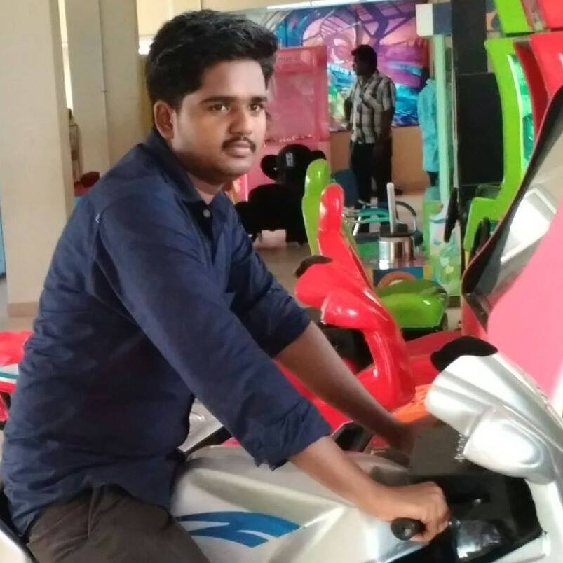

TECH@PARK
Building PRO-grammers
TECH@PARK finds deserving graduates and help them to get their first software job. The diffrence TECH@PARK has made is because, our students and our story are diffrenet
-

Before attending the training i had no idea about my future. Now i have a job because of you - Marees,Tech42
-

TECT@PARK !! Your guys are amazing. Today my site is live thanks to your effort.- Martyn Charles,Music Composer
-
It is nice to see that the team is well trained.They also have strong fundamental knowledge on technology front. It makes us easy to deploy them in customer project - Sundararajan,Co-Founder, Ajira
-

Really bro, You are my life kickstarter. - Vijayakumar,GlassOnion
-
I am impressed with the effort that you guys are making- Piyush, Director, Glass Onion Consulting LLP
-
Thanks na for what you did. Because of you i leaned technology and earned contacts - Gunasekaran,Aricent
-
Thanks Sathish na for this. Thanks would not be appropriate word for this help - Sureshkumar,Ajira